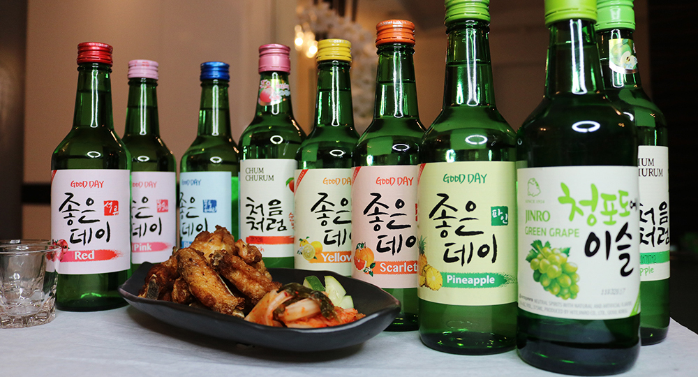
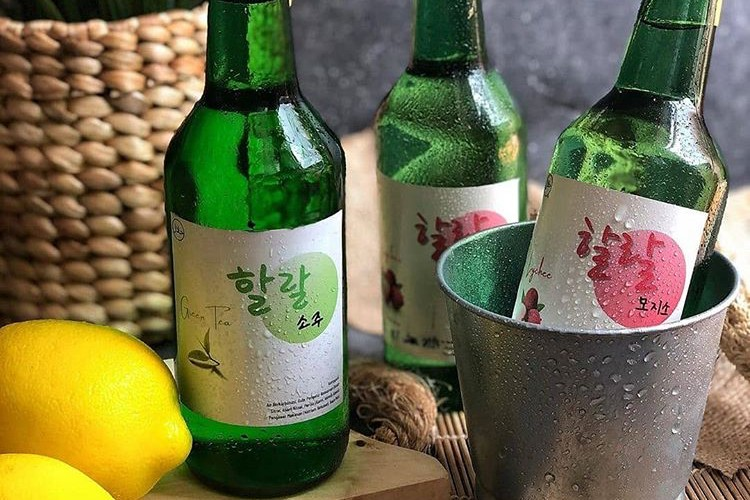

История
Впервые соджу появилось около 1300 года во время монгольского вторжения в Корею. Монголы принесли с собой технологию дистилляции, которую в свою очередь переняли от персов во время походов в Центральную Азию.
С 1965 по 1991, в качестве меры по уменьшению расхода риса, правительство Южной Кореи запретило традиционный метод перегонки соджу из чистого зерна. Соджу стали делать путём разведения этилового спирта и добавления ароматизаторов (фруктоза и др.). Значительная часть марок соджу, производимых в настоящее время, делаются именно таким способом. Южнокорейское государство регулирует процент производимого путём разбавления соджу на уровне не более 35 % от общего количества.
В настоящее время соджу — главный алкогольный напиток как в Южной, так и в Северной Корее. В Южной Корее в 2004 году было потреблено более 3 миллиардов бутылок соджу. Кроме того, один из брендов соджу — южнокорейский Jinro, является лидером среди алкогольных брендов в мире по объёмам продаж. В 2008 году было продано 75,99 миллионов ящиков этого напитка. Более 90 % продукции Jinro продаётся в Южной Корее.
Изготовление
Чистое соджу
Основным сырьём при производстве соджу является сладкий картофель и зерновые культуры — рис и пшеница. Технологический цикл производства соджу включает в себя несколько этапов:
- сначала сырье размалывают и отжимают
- далее приготавливается брага — размолотое и отжатое сырьё хранится в специальных сосудах, где постепенно накапливает этиловый спирт
- ... и непосредственно перегонка браги в готовый продукт.
Употребление
Разбавляют соджу обычно спрайтом, тоником или сиропом. Различные вкусовые добавки и ароматизаторы добавляют вкусу соджу лимонный, дынный, арбузный оттенки.
Соджу редко добавляют в коктейли, однако в последнее время это стало распространённой практикой.
Среди мужчин популярен напиток поктанджу — он представляет собой стопку соджу, опущенную на дно кружки с пивом.
Пьётся залпом. Более крепкий аналог — сусо поктанджу — в большой бокал соджу ставится небольшая стопка с пивом.
Корейский этикет
- Cоджу разливается в небольшие стеклянные стопки. Обычной закуской являются блюда из мяса или рыбы
- Наливать соджу принято двумя руками. Наливать напиток самому себе — дурной тон.
- Пить соджу принято небольшими глотками, осушая рюмку за несколько раз
- Рюмку соджу нужно выпить до конца, и лишь после этого наполнять заново
- Более молодые корейцы не пьют соджу перед старшими. Сидя за одним столом, следует отвернуться и только после этого приложиться к стакану. Другое поведение является признаком неуважения.